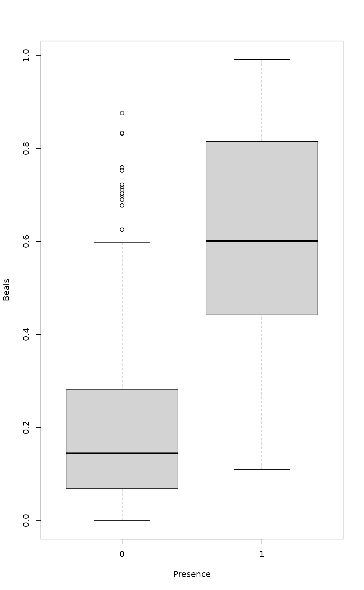

Beals Smoothing and Degree of Absence
beals.RdBeals smoothing replaces each entry in the community data with a probability of a target species occurring in that particular site, based on the joint occurrences of the target species with the species that actually occur in the site. Swan's (1970) degree of absence applies Beals smoothing to zero items so long that all zeros are replaced with smoothed values.
Usage
beals(x, species = NA, reference = x, type = 0, include = TRUE)
swan(x, maxit = Inf, type = 0)Arguments
- x
Community data frame or matrix.
- species
Column index used to compute Beals function for a single species. The default (
NA) indicates that the function will be computed for all species.- reference
Community data frame or matrix to be used to compute joint occurrences. By default,
xis used as reference to compute the joint occurrences.- type
Numeric. Specifies if and how abundance values have to be used in function
beals. See details for more explanation.- include
This logical flag indicates whether the target species has to be included when computing the mean of the conditioned probabilities. The original Beals (1984) definition is equivalent to
include=TRUE, while the formulation of Münzbergová and Herben is equal toinclude=FALSE.- maxit
Maximum number of iterations. The default
Infmeans that iterations are continued until there are no zeros or the number of zeros does not change. Probably onlymaxit = 1makes sense in addition to the default.
Details
Beals smoothing is the estimated probability \(p_{ij}\) that
species \(j\) occurs at site \(i\). It is defined as \(p_{ij}
= \frac{1}{S_i} \sum_k \frac{N_{jk} I_{ik}}{N_k}\), where \(S_i\) is the number of
species at site \(i\), \(N_{jk}\) is the number of joint
occurrences of species \(j\) and \(k\), \(N_k\) is the
number of occurrences of species \(k\), and \(I\) is the incidence
(0 or 1) of species (this last term is usually omitted from the
equation, but it is necessary). As \(N_{jk}\) can be
interpreted as a mean of conditional probability, the beals
function can be interpreted as a mean of conditioned probabilities (De
Cáceres & Legendre 2008). The present function is
generalized to abundance values (De Cáceres & Legendre
2008).
The type argument specifies if and how abundance values have to be
used. type = 0 presence/absence mode. type = 1
abundances in reference (or x) are used to compute
conditioned probabilities. type = 2 abundances in x are
used to compute weighted averages of conditioned
probabilities. type = 3 abundances are used to compute both
conditioned probabilities and weighted averages.
Beals smoothing was originally suggested as a method of data
transformation to remove excessive zeros (Beals 1984, McCune 1994).
However, it is not a suitable method for this purpose since it does
not maintain the information on species presences: a species may have
a higher probability of occurrence at a site where it does not occur
than at sites where it occurs. Moreover, it regularizes data too
strongly. The method may be useful in identifying species that belong
to the species pool (Ewald 2002) or to identify suitable unoccupied
patches in metapopulation analysis (Münzbergová &
Herben 2004). In this case, the function should be called with
include=FALSE for cross-validation smoothing for species;
argument species can be used if only one species is studied.
Swan (1970) suggested replacing zero values with degrees of absence of
a species in a community data matrix. Swan expressed the method in
terms of a similarity matrix, but it is equivalent to applying Beals
smoothing to zero values, at each step shifting the smallest initially
non-zero item to value one, and repeating this so many times that
there are no zeros left in the data. This is actually very similar to
extended dissimilarities (implemented in function
stepacross), but very rarely used.
Value
The function returns a transformed data matrix or a vector if Beals smoothing is requested for a single species.
References
Beals, E.W. 1984. Bray-Curtis ordination: an effective strategy for analysis of multivariate ecological data. Pp. 1–55 in: MacFadyen, A. & E.D. Ford [eds.] Advances in Ecological Research, 14. Academic Press, London.
De Cáceres, M. & Legendre, P. 2008. Beals smoothing revisited. Oecologia 156: 657–669.
Ewald, J. 2002. A probabilistic approach to estimating species pools from large compositional matrices. J. Veg. Sci. 13: 191–198.
McCune, B. 1994. Improving community ordination with the Beals smoothing function. Ecoscience 1: 82–86.
Münzbergová, Z. & Herben, T. 2004. Identification of suitable unoccupied habitats in metapopulation studies using co-occurrence of species. Oikos 105: 408–414.
Swan, J.M.A. 1970. An examination of some ordination problems by use of simulated vegetational data. Ecology 51: 89–102.
Examples
data(dune)
## Default
x <- beals(dune)
## Remove target species
x <- beals(dune, include = FALSE)
## Smoothed values against presence or absence of species
pa <- decostand(dune, "pa")
boxplot(as.vector(x) ~ unlist(pa), xlab="Presence", ylab="Beals")

## Remove the bias of tarbet species: Yields lower values.
beals(dune, type =3, include = FALSE)
#> Achimill Agrostol Airaprae Alopgeni Anthodor Bellpere Bromhord
#> 1 0.49590853 0.38333415 0.01157407 0.4923280 0.30827883 0.4935662 0.43263047
#> 2 0.47083676 0.39501120 0.03361524 0.4718807 0.34723984 0.4917791 0.42000984
#> 3 0.34063019 0.52738394 0.01520046 0.5309152 0.21609954 0.4033301 0.33010938
#> 4 0.30816435 0.51198853 0.02876960 0.5971801 0.21542662 0.4398775 0.35732610
#> 5 0.59949785 0.27622698 0.06632771 0.3349203 0.48876285 0.4322142 0.44309579
#> 6 0.58819821 0.26299306 0.05967771 0.2700508 0.53154426 0.3696613 0.39760652
#> 7 0.56496165 0.29412293 0.05329633 0.3403047 0.48010987 0.4051777 0.40471531
#> 8 0.21230502 0.66906674 0.02588333 0.5187956 0.16247716 0.2720122 0.21219877
#> 9 0.30323659 0.59744543 0.02213662 0.5792855 0.21896113 0.3292320 0.28613526
#> 10 0.54083871 0.26902092 0.07349127 0.3372958 0.42671693 0.4705094 0.42934344
#> 11 0.40509331 0.31656550 0.10259239 0.3185489 0.38766111 0.3713794 0.31413659
#> 12 0.21008725 0.66278454 0.03625297 0.5753377 0.20078932 0.2802946 0.22974415
#> 13 0.21850759 0.68239707 0.02191119 0.6404427 0.16737280 0.2939740 0.24942466
#> 14 0.13570397 0.76284476 0.02298398 0.4107645 0.12128973 0.1682755 0.13757552
#> 15 0.09168815 0.79412733 0.02538032 0.4505613 0.10117099 0.1420251 0.09794548
#> 16 0.06335463 0.87877202 0.00742115 0.5232448 0.05538377 0.1516354 0.09458531
#> 17 0.55254140 0.07330247 0.29233391 0.1013889 0.69331132 0.3129358 0.34982363
#> 18 0.37751017 0.34451209 0.08535723 0.2838834 0.36918166 0.3676424 0.30478244
#> 19 0.29826049 0.25952255 0.35137675 0.1934048 0.51929869 0.2237843 0.18074796
#> 20 0.05429986 0.76675441 0.06144615 0.4063662 0.10738280 0.1450721 0.06706410
#> Chenalbu Cirsarve Comapalu Eleopalu Elymrepe Empenigr
#> 1 0.025132275 0.09504980 0.000000000 0.05592045 0.4667439 0.00000000
#> 2 0.043866562 0.08570299 0.026548839 0.08656209 0.4407282 0.01829337
#> 3 0.065338638 0.08967477 0.031898812 0.16099072 0.4137888 0.01074444
#> 4 0.057970906 0.12920228 0.039859621 0.16112450 0.4399661 0.02527165
#> 5 0.026434737 0.05520104 0.015892090 0.05419613 0.3575948 0.03029752
#> 6 0.021256367 0.03223112 0.030347896 0.08784329 0.3138879 0.03093489
#> 7 0.038467708 0.04706743 0.017083997 0.06694311 0.3586644 0.02304603
#> 8 0.063278453 0.06688407 0.100703044 0.29777644 0.3046956 0.02102222
#> 9 0.069879277 0.07647268 0.045830682 0.19018562 0.3523460 0.01838883
#> 10 0.025686639 0.06037513 0.029746617 0.07787078 0.3736128 0.03425596
#> 11 0.021234732 0.05778318 0.035740922 0.11146095 0.2884798 0.07310076
#> 12 0.103543341 0.07799259 0.045375827 0.19518888 0.3354080 0.03413656
#> 13 0.122547745 0.07905124 0.056084315 0.22437598 0.3511708 0.01840390
#> 14 0.042990591 0.03618335 0.241811837 0.55982776 0.1428372 0.01989756
#> 15 0.035609053 0.04022968 0.198176675 0.53973883 0.1462975 0.02215971
#> 16 0.056246994 0.05184498 0.201352298 0.51523810 0.1832397 0.00742115
#> 17 0.007716049 0.01049383 0.009876543 0.02777778 0.1929470 0.21968254
#> 18 0.014640428 0.04454602 0.042890320 0.17341352 0.2651538 0.06763669
#> 19 0.019591245 0.03668466 0.031845637 0.12592768 0.1422725 0.26011417
#> 20 0.037623741 0.03453783 0.185726965 0.58476297 0.1168700 0.05905666
#> Hyporadi Juncarti Juncbufo Lolipere Planlanc Poaprat Poatriv
#> 1 0.07702746 0.14794933 0.1987270 0.9226190 0.40103107 0.9863946 0.8826329
#> 2 0.07454127 0.13017869 0.2070478 0.8272395 0.40700777 0.8972046 0.8288385
#> 3 0.05562332 0.22291082 0.2544828 0.7205525 0.27933493 0.8083020 0.8383185
#> 4 0.06985986 0.21320122 0.2318440 0.7197924 0.25797285 0.7940926 0.8197302
#> 5 0.10245961 0.10406655 0.2164230 0.8380779 0.52628928 0.9035899 0.8094632
#> 6 0.11463153 0.11631772 0.2166255 0.8000021 0.58765018 0.8666677 0.7782619
#> 7 0.10837376 0.11293676 0.2110045 0.8053380 0.51905808 0.8925059 0.8018775
#> 8 0.06550319 0.33219882 0.2323566 0.5403355 0.20596764 0.6160461 0.7101299
#> 9 0.05343787 0.23134366 0.2675624 0.6874068 0.25274756 0.7523318 0.8247374
#> 10 0.13692492 0.09080902 0.1678040 0.8102783 0.52588347 0.8915882 0.7543592
#> 11 0.18108995 0.13478872 0.1656396 0.7180948 0.47012501 0.8062720 0.6404351
#> 12 0.06777311 0.27306206 0.3231724 0.5875943 0.22110550 0.6932541 0.8199960
#> 13 0.04250245 0.28204736 0.3339728 0.5714581 0.18153869 0.7063028 0.7993754
#> 14 0.04665747 0.46685537 0.1206518 0.3356311 0.14342002 0.3817081 0.5090703
#> 15 0.05040404 0.51561767 0.1370235 0.3689922 0.13523214 0.4078219 0.5263520
#> 16 0.01731602 0.54304667 0.1776781 0.3561752 0.07269979 0.4124222 0.6071083
#> 17 0.36492870 0.03333333 0.1038156 0.5858415 0.59641331 0.7434618 0.5036834
#> 18 0.17491099 0.18956922 0.1376386 0.7124388 0.45087176 0.7368632 0.5859071
#> 19 0.39145281 0.13543701 0.1127832 0.4289185 0.40784415 0.5548077 0.3605827
#> 20 0.07795311 0.53056145 0.1192488 0.3262685 0.13059496 0.3662817 0.4523029
#> Ranuflam Rumeacet Sagiproc Salirepe Scorautu Trifprat Trifrepe
#> 1 0.08105273 0.3160963 0.3371121 0.02729885 0.8898317 0.21701279 0.8782576
#> 2 0.13042865 0.3031318 0.3302063 0.05983781 0.9349640 0.20673650 0.9125666
#> 3 0.22632936 0.2909068 0.4204104 0.06065155 0.9036443 0.14654749 0.8817430
#> 4 0.21909541 0.2610006 0.4191908 0.07579199 0.9204237 0.12896524 0.8943213
#> 5 0.08063087 0.3979230 0.2612828 0.07589611 0.9576838 0.34808957 0.9142360
#> 6 0.10909966 0.4330705 0.2539380 0.08921540 0.9590466 0.35423465 0.9110822
#> 7 0.10541081 0.4113622 0.2954682 0.07094548 0.9550487 0.32489503 0.9171688
#> 8 0.40134447 0.2331043 0.4009544 0.11569906 0.8755515 0.09897600 0.8002526
#> 9 0.26006489 0.3464870 0.4531178 0.07351827 0.9145996 0.16269563 0.8714833
#> 10 0.10355742 0.3226025 0.2732735 0.09037489 0.9568824 0.26807372 0.9003730
#> 11 0.13269569 0.2753878 0.3673397 0.16465286 0.9442707 0.19982976 0.8979262
#> 12 0.29873222 0.3507140 0.5122033 0.08041977 0.9377963 0.13849854 0.9079979
#> 13 0.33309468 0.3107471 0.5131337 0.06572594 0.9255312 0.11199114 0.8841739
#> 14 0.64674225 0.1241545 0.2528665 0.15917563 0.8477706 0.06176123 0.6485949
#> 15 0.64449081 0.1459458 0.3151199 0.17750323 0.8430677 0.05831084 0.7170446
#> 16 0.66893881 0.1508409 0.3480368 0.15783292 0.8131968 0.03916718 0.6776273
#> 17 0.03549383 0.2913631 0.3292030 0.25651777 0.9839744 0.27593101 0.8141660
#> 18 0.18805395 0.2668100 0.3154533 0.17191937 0.9554011 0.20461193 0.8600701
#> 19 0.14551892 0.1831168 0.4798245 0.36429493 0.9902041 0.11966159 0.8147968
#> 20 0.62796060 0.1098600 0.3105433 0.21674174 0.8457313 0.03708580 0.6350394
#> Vicilath Bracruta Callcusp
#> 1 0.17244420 0.7476589 0.003527337
#> 2 0.18494940 0.7415172 0.034597921
#> 3 0.12833142 0.7666969 0.075789630
#> 4 0.12550967 0.7919786 0.081110164
#> 5 0.16693075 0.8079786 0.023129027
#> 6 0.18035860 0.8387650 0.040981168
#> 7 0.19027523 0.8089116 0.024070054
#> 8 0.10213052 0.8109194 0.201958942
#> 9 0.08630413 0.7972178 0.092982775
#> 10 0.23383453 0.7660374 0.033527777
#> 11 0.24317802 0.8182692 0.043950322
#> 12 0.08049055 0.8061715 0.100954127
#> 13 0.06604026 0.7465509 0.122856392
#> 14 0.07857237 0.7238162 0.347514804
#> 15 0.07370069 0.7997141 0.381379395
#> 16 0.03353260 0.8029953 0.364128496
#> 17 0.20728700 0.7635487 0.009876543
#> 18 0.26222869 0.8397471 0.109959916
#> 19 0.18188455 0.8161275 0.082361157
#> 20 0.09111967 0.8397124 0.397924041
## Uses abundance information.
## Vector with beals smoothing values corresponding to the first species
## in dune.
beals(dune, species=1, include=TRUE)
#> 1 2 3 4 5 6 7 8
#> 0.5923077 0.5032372 0.3499038 0.3306953 0.5944041 0.5928780 0.5824352 0.2082532
#> 9 10 11 12 13 14 15 16
#> 0.2960799 0.5462492 0.3659392 0.2610043 0.1982372 0.0922619 0.1140625 0.1066506
#> 17 18 19 20
#> 0.6020408 0.3844577 0.2865741 0.0750000